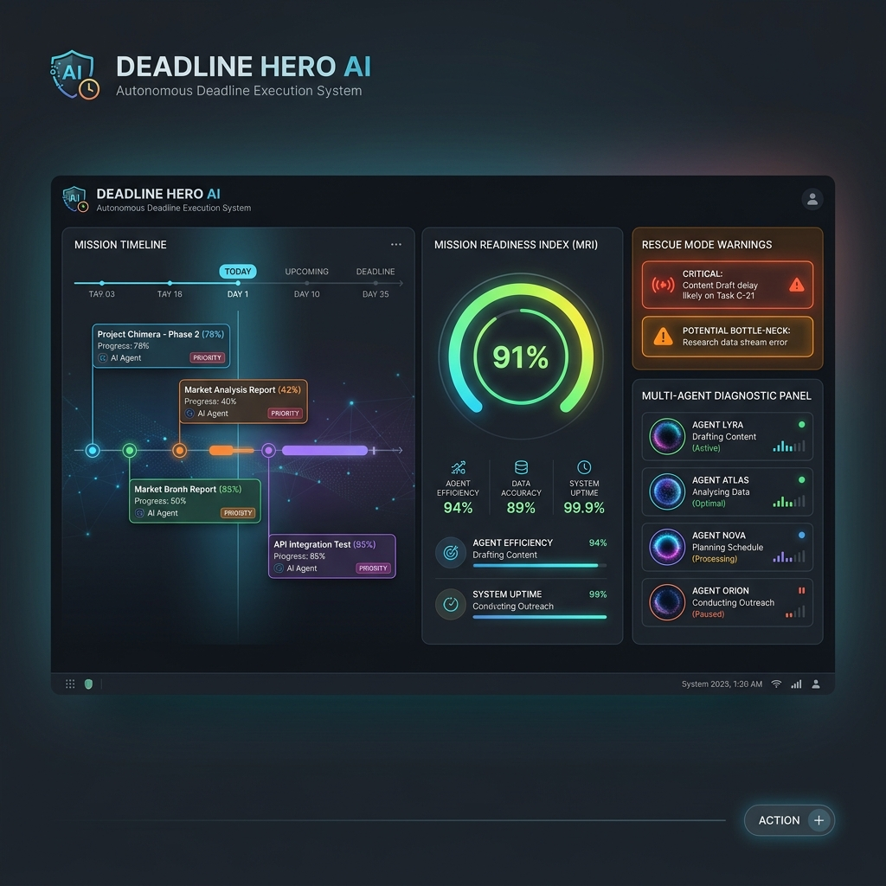
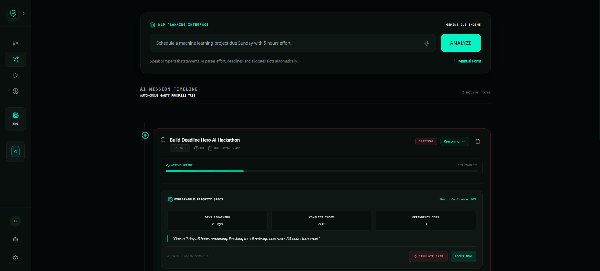
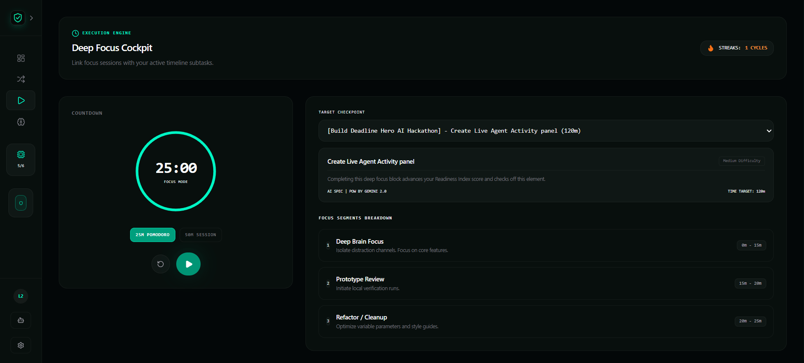
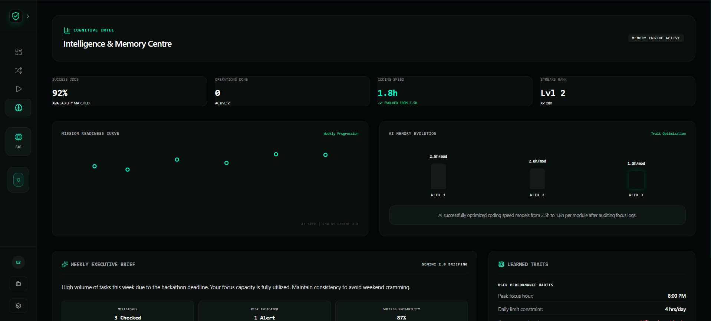
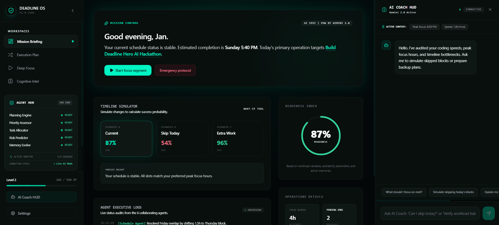

Deadline Hero AI
A production-grade AI-powered productivity platform and autonomous execution engine that proactively prioritizes tasks, builds adaptive timelines, and suggests rescue plans to prevent missed deadlines.





What is Deadline Hero AI?
Deadline Hero AI is styled as an AI Operating System for productivity. While standard managers rely on passive alarms, Deadline Hero operates as an active planner. It leverages LLMs to decompose large milestones into small tasks, resolves dependencies, computes risk thresholds, and dynamically reschedules workloads if tasks are delayed.
Productivity Engine Subsystems
Autonomous Task Decomposition
Converts high-level prompts into granular subtasks, automatically estimating effort parameters and execution paths.
Adaptive Timeline & What-If Engine
Renders an interactive canvas. When a task slips, the scheduling engine recalculates remaining timelines and offers risk mitigation forecasts.
Mission Readiness Index (MRI)
Displays a core dashboard statistic indicating the likelihood of project completion, calculated based on current velocities, dependency chains, and active workloads.
Rescue Mode
Triggers when major delays threaten milestones. The system prompts suggestions for scope reductions, resource redistribution, and recovery plans.
Multi-Agent Workflow
The backend partitions responsibilities among specialized virtual agents, structured as follows:
This separation lets each node focus on a singular parameter (e.g. Risk Agent calculates probability curves, Scheduling Agent builds layout calendars), resulting in faster inference speeds and reliable outputs.
Engineering Complexities Resolved
- Explainable Recommendations: Generates formatted confidence tags explaining task placement choices.
- Adaptive Scheduling: Implements a recursive topological sort to adjust parent-child task dates whenever a child item gets rescheduled.
- Real-time State Synchronization: Employs Supabase Realtime listeners to sync dashboard widgets instantly as tasks progress.